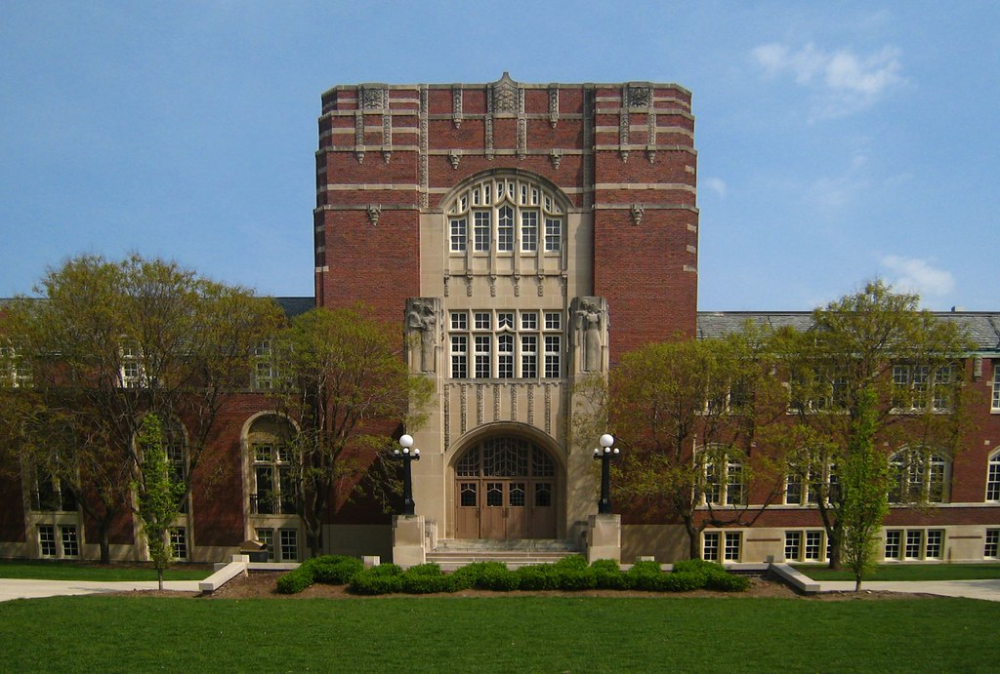
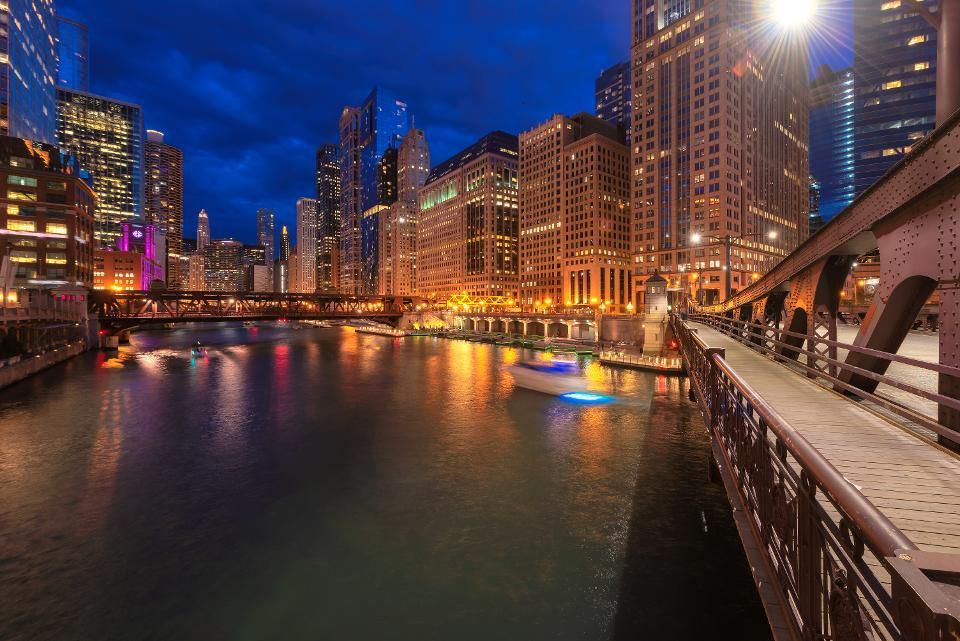
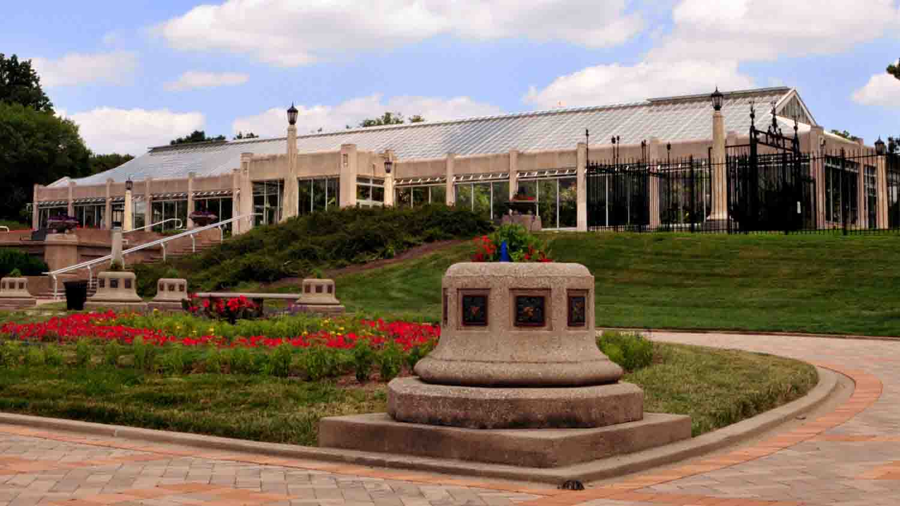

VENUE
ANCRiSST 2020 will be held at Purdue University. Purdue University is a public research university founded in 1869, located in West Lafayette, Indiana. Purdue offers more than 200 majors for undergraduates, and 69 masters and doctoral programs at the main campus in West Lafayette. In 2019, Purdue Engineering ranked 7th in the United States, Civil Engineering is ranked 5th in undergraduate and 6th in graduate (U.S. News & World Report). The summer school will be held at the school of Mechanical Engineering, Hampton Hall of Civil Engineering (HAMP), Bowen laboratories and Ray W. Herrick Laboratories.
Lafayette
The greater Lafayette area made of West Lafayette and Lafayette is separated by the Wabash river. Lafayette is located 63 miles (101 km) from Indianapolis, 105 miles (169 km) from Chicago. Lafayette offers a lot of activities to do both in its lively urban setting as well as surrounding natural landscapes. More information about the things to do and attractions can be found on:
https://www.homeofpurdue.com/

Chicago
The City of Chicago is the third-most-populous city in the United States, and the most populous city in the state of Illinois. One of the biggest cities in United States, Chicago is an international hub for finance, culture, technology, telecommunications, and transportation. Chicago welcomes more than 50 million visitors every year and offers a ton of things to do. With a city so huge and so diverse, Chicago has something for everyone. More information about the things to do and attractions can be found on the following websites:
https://www.thecrazytourist.com/top-25-things-to-do-in-chicago-il/
https://www.forbes.com/sites/bradjaphe/2019/07/10/things-to-do-in-chicago/

Indianapolis
Indianapolis (often shorten to Indy) is the 17th most populous city in the United States and is the state capital of Indiana. Home to the famous race of Indy 500, there are a lot of different foods and things to be tried when visiting Indy. Only an hour’s distance from Purdue, Indianapolis serves as the go to city for many of the boilermakers. More information about the things to do can be found on these websites:
https://www.visitindy.com/indianapolis-things-to-do/
https://www.thrillist.com/lifestyle/indianapolis/things-to-do-in-indianapolis/
